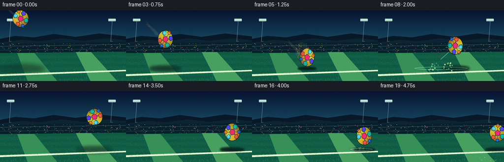
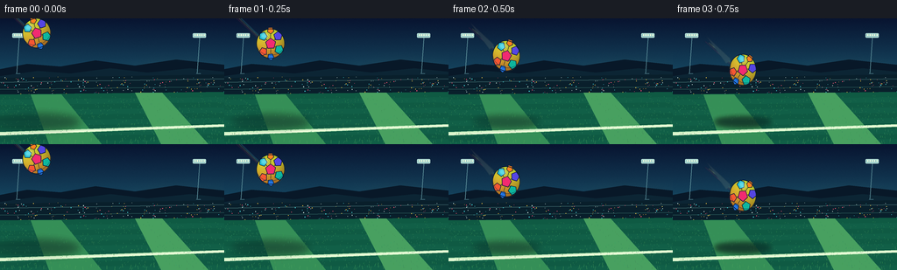
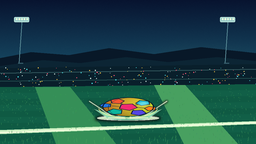
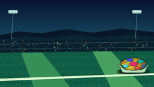

CODING AGENTS AS PIXEL WORLD MODELS
traex/GPT-5.6-Sol · phygen_029
点击播放 · 原生 RGB 像素
逐轮保存的候选
回放视频、检查图与代码变化。
每份候选均可单独播放。实际图片检查记录在下方工具轨迹中。
候选 01播放与检查图
点击播放 · 原生 RGB 像素


展开代码变化
--- 上一保存版本
+++ 本次保存版本
@@ -0,0 +1,275 @@
+from pathlib import Path
+import math, json
+import numpy as np
+from PIL import Image, ImageDraw, ImageFilter
+import artifact_io
+
+ROOT = Path(__file__).resolve().parent
+SPEC = json.loads((ROOT / "task_spec.json").read_text())
+W, H, N = SPEC["width"], SPEC["height"], SPEC["frames"]
+S = 4
+WW, HH = W*S, H*S
+rng = np.random.default_rng(29017)
+
+def sc(v): return int(round(v*S))
+def pts(seq): return [(sc(x),sc(y)) for x,y in seq]
+
+def gradient_background():
+ y = np.linspace(0, 1, HH)[:,None,None]
+ top = np.array([8, 20, 48.], dtype=float)
+ horizon = np.array([27, 91, 116.], dtype=float)
+ sky_t = np.minimum(y / .62, 1)
+ arr = top*(1-sky_t) + horizon*sky_t
+ arr = np.repeat(arr, WW, axis=1)
+ # diffuse sunset glow near the right horizon
+ yy, xx = np.mgrid[0:HH,0:WW]
+ glow = np.exp(-(((xx-WW*.79)/(WW*.34))**2 + ((yy-HH*.49)/(HH*.22))**2)*3.0)[...,None]
+ arr += glow*np.array([18,17,4.])
+ # gentle fine grain
+ arr += rng.normal(0, 1.25, (HH,WW,1))
+ return Image.fromarray(np.uint8(np.clip(arr,0,255)), 'RGB').convert('RGBA')
+
+def build_static_scene():
+ im = gradient_background()
+ d = ImageDraw.Draw(im, 'RGBA')
+ # distant stadium roof silhouettes
+ d.polygon(pts([(0,58),(31,52),(69,55),(109,48),(154,54),(201,47),(256,53),(256,84),(0,84)]), fill=(8,24,40,245))
+ d.polygon(pts([(0,66),(43,60),(80,63),(126,57),(168,62),(217,57),(256,61),(256,88),(0,88)]), fill=(12,37,52,255))
+ # floodlight masts and luminous lamps
+ for x in (22, 228):
+ d.line(pts([(x,20),(x-3,63)]), fill=(92,142,153,210), width=sc(.8))
+ d.line(pts([(x-4,63),(x+1,63)]), fill=(56,96,109,220), width=sc(1))
+ d.rounded_rectangle((sc(x-8),sc(17),sc(x+7),sc(22)), radius=sc(1), fill=(157,205,202,170), outline=(214,255,237,190), width=sc(.5))
+ for j in range(5):
+ d.ellipse((sc(x-6+j*2.6),sc(18),sc(x-4.7+j*2.6),sc(20)), fill=(242,255,222,240))
+ # stand tiers
+ d.polygon(pts([(0,68),(256,64),(256,91),(0,91)]), fill=(9,31,43,255))
+ d.line(pts([(0,73),(256,69)]), fill=(51,89,94,220), width=sc(1))
+ d.line(pts([(0,81),(256,78)]), fill=(34,75,77,220), width=sc(1))
+ # tiny crowd flecks, deterministic
+ crng=np.random.default_rng(123)
+ colors=[(255,90,120,170),(74,224,231,165),(251,204,73,175),(211,235,226,150)]
+ for _ in range(260):
+ x=float(crng.uniform(0,256)); yv=float(crng.uniform(67,87))
+ if crng.random() < .66:
+ col=colors[int(crng.integers(0,len(colors)))]
+ r=float(crng.uniform(.18,.48))
+ d.ellipse((sc(x-r),sc(yv-r),sc(x+r),sc(yv+r)),fill=col)
+ # field, layered to suggest depth
+ d.polygon(pts([(0,87),(256,84),(256,144),(0,144)]), fill=(13,83,66,255))
+ for k in range(11):
+ y0=87+k*6
+ col=(15+2*(k%2), 90+5*(k%2), 67+4*(k%2), 70)
+ d.polygon(pts([(0,y0),(256,y0-3),(256,y0+4),(0,y0+7)]), fill=col)
+ # perspective mowing bands
+ d.polygon(pts([(35,87),(70,87),(116,144),(56,144)]), fill=(53,143,87,35))
+ d.polygon(pts([(154,85),(185,85),(238,144),(184,144)]), fill=(72,160,96,28))
+ # boundary markings behind impact, perspective line
+ d.polygon(pts([(0,130),(0,134),(256,124),(256,121)]), fill=(206,241,196,155))
+ d.polygon(pts([(0,132),(0,133),(256,123),(256,122)]), fill=(248,255,226,110))
+ # foreground blades / texture
+ frng=np.random.default_rng(924)
+ for _ in range(700):
+ x=float(frng.uniform(0,256)); yv=float(frng.uniform(89,144))
+ length=float(frng.uniform(.3,1.8))*(.5+(yv-89)/55)
+ col=(48+int(frng.integers(0,25)), 125+int(frng.integers(0,45)), 75+int(frng.integers(0,30)), int(frng.integers(35,100)))
+ d.line(pts([(x,yv),(x+float(frng.uniform(-.45,.45)),yv-length)]), fill=col, width=sc(.25))
+ return im
+
+STATIC = build_static_scene()
+
+def regular_polygon(cx,cy,r,n,rot=-math.pi/2):
+ return [(cx+math.cos(rot+2*math.pi*i/n)*r, cy+math.sin(rot+2*math.pi*i/n)*r) for i in range(n)]
+
+def ball_texture(size=224):
+ # sphere in canonical square, generous margin for rotation
+ yy,xx=np.mgrid[0:size,0:size]
+ c=(size-1)/2; rad=size*.43
+ nx=(xx-c)/rad; ny=(yy-c)/rad
+ rr=nx*nx+ny*ny
+ inside=rr<=1
+ nz=np.sqrt(np.clip(1-rr,0,1))
+ light=np.array([-.42,-.58,.69]); lum=np.clip(nx*light[0]+ny*light[1]+nz*light[2],-1,1)
+ base=np.zeros((size,size,4),dtype=np.uint8)
+ # saturated lime-to-gold shell
+ shade=.52+.48*np.clip((lum+1)/2,0,1)
+ base[...,0]=np.clip((225+25*ny)*shade,0,255)
+ base[...,1]=np.clip((190-35*ny)*shade,0,255)
+ base[...,2]=np.clip((43+8*nz)*shade,0,255)
+ base[...,3]=inside*255
+ im=Image.fromarray(base,'RGBA')
+ d=ImageDraw.Draw(im,'RGBA')
+ seam=(13,30,57,235)
+ # colorful soccer panels with dark stitched seams
+ panels=[
+ (0.50,0.50,0.168,5,-math.pi/2,(242,43,113,255)),
+ (0.28,0.28,0.135,5,-1.2,(25,202,231,255)),
+ (0.73,0.29,0.14,5,-.3,(85,70,226,255)),
+ (0.75,0.68,0.145,5,.25,(14,182,157,255)),
+ (0.27,0.72,0.13,5,.65,(247,87,50,255)),
+ (0.51,0.12,0.11,5,-1.0,(255,128,31,255)),
+ (0.49,0.88,0.11,5,.2,(34,116,225,255)),
+ ]
+ centers=[]
+ for fx,fy,fr,n,rot,col in panels:
+ p=regular_polygon(fx*size,fy*size,fr*size,n,rot)
+ d.polygon(p,fill=col,outline=seam,width=max(2,size//55))
+ centers.append((fx*size,fy*size,p))
+ # soccer-ball seam bridges from center panel to neighbors
+ cc=(size*.5,size*.5)
+ for fx,fy,_ in centers[1:]:
+ vx=fx-cc[0]; vy=fy-cc[1]; L=math.hypot(vx,vy); ux=vx/L; uy=vy/L
+ d.line([(cc[0]+ux*size*.15,cc[1]+uy*size*.15),(fx-ux*size*.11,fy-uy*size*.11)],fill=seam,width=max(2,size//58))
+ # curved latitude seams add roundness
+ d.arc((size*.08,size*.19,size*.92,size*.83),10,170,fill=(22,39,60,180),width=max(1,size//90))
+ # specular gloss clipped to sphere
+ shine=Image.new('RGBA',(size,size),(0,0,0,0)); sd=ImageDraw.Draw(shine,'RGBA')
+ sd.ellipse((size*.20,size*.17,size*.46,size*.37),fill=(255,255,235,80))
+ shine=shine.filter(ImageFilter.GaussianBlur(size*.028))
+ mask=Image.fromarray(np.uint8(inside*255),'L')
+ shine.putalpha(Image.composite(shine.getchannel('A'),Image.new('L',(size,size),0),mask))
+ im=Image.alpha_composite(im,shine)
+ # crisp shell outline
+ d=ImageDraw.Draw(im,'RGBA')
+ d.ellipse((c-rad,c-rad,c+rad,c+rad),outline=(8,25,46,245),width=max(2,size//45))
+ return im
+
+BALL = ball_texture()
+
+# centers and deformations, deliberately showing impact and damped rebound
+centers=[(42,17),(53,29),(66,43),(80,59),(96,77),(112,96),(128,107),
+ (143,89),(157,72),(170,60),(182,53),(192,52),(201,57),(209,68),
+ (216,83),(222,106),(228,91),(233,83),(238,81),(243,85)]
+radii=[(19,20),(19,20),(18.5,20.5),(18,21),(17.5,22),(17,22), (30,11),
+ (17,24),(18,21),(19,20),(19.5,19.5),(19.5,19.5),(19,20),(18.5,20.5),
+ (18,21),(24,12),(18,22),(19,20),(19.5,19.5),(19,20)]
+# texture spins rapidly while shell itself deforms
+angles=[-18,-2,15,34,54,76,99,124,146,168,190,211,230,248,267,288,307,325,343,360]
+
+def overlay(base, layer):
+ return Image.alpha_composite(base,layer)
+
+def draw_speed_streaks(im,i):
+ lay=Image.new('RGBA',(WW,HH),(0,0,0,0)); d=ImageDraw.Draw(lay,'RGBA')
+ x,y=centers[i]
+ if i<=5:
+ # streaks align with incoming velocity
+ for k,(off,col) in enumerate([(-8,(89,235,244,70)),(0,(255,235,125,100)),(8,(247,69,139,62))]):
+ L=23+4*k
+ d.line(pts([(x-12-L,y-12-L*.72+off*.2),(x-14,y-8+off*.25)]),fill=col,width=sc(1.6-k*.25))
+ if i>=2:
+ d.polygon(pts([(x-42,y-39),(x-14,y-13),(x-19,y-7)]),fill=(243,242,179,25))
+ elif i in (7,8):
+ d.line(pts([(x-30,y+28),(x-11,y+11)]), fill=(119,239,220,72), width=sc(2))
+ d.line(pts([(x-35,y+23),(x-13,y+6)]), fill=(255,103,159,52), width=sc(1))
+ lay=lay.filter(ImageFilter.GaussianBlur(sc(.5)))
+ return overlay(im,lay)
+
+def draw_shadow(im,x,y,rx,ry,i):
+ ground=118.5
+ height=max(0,ground-(y+ry))
+ # Wider, softer and lighter with height; very dark and tight at contact
+ spread=rx*(1.08+height*.018)
+ sy=2.2+height*.075
+ alpha=int(max(25,135-height*2.2))
+ sh=Image.new('RGBA',(WW,HH),(0,0,0,0)); d=ImageDraw.Draw(sh,'RGBA')
+ d.ellipse((sc(x-spread),sc(ground-sy),sc(x+spread),sc(ground+sy)),fill=(2,15,22,alpha))
+ sh=sh.filter(ImageFilter.GaussianBlur(sc(1.5+height*.035)))
+ return overlay(im,sh)
+
+# particles specified by direction/speed for primary and secondary contacts
+prng=np.random.default_rng(551)
+primary=[]
+for k in range(38):
+ side=-1 if k%2==0 else 1
+ vx=side*float(prng.uniform(2.5,11.5)); vy=-float(prng.uniform(2.0,10.0))
+ primary.append((vx,vy,float(prng.uniform(.35,1.2)),int(prng.integers(0,3))))
+secondary=[]
+for k in range(18):
+ side=-1 if k%2==0 else 1
+ secondary.append((side*float(prng.uniform(1.8,7)), -float(prng.uniform(1.5,6)), float(prng.uniform(.3,.8)), int(prng.integers(0,3))))
+
+def draw_impact(im,i,start,cx,strength=1.0,particles=primary):
+ age=i-start
+ if age<0 or age>4: return im
+ lay=Image.new('RGBA',(WW,HH),(0,0,0,0)); d=ImageDraw.Draw(lay,'RGBA')
+ ground=118
+ if age==0:
+ # flattened contact flash and radial shock spikes
+ d.ellipse((sc(cx-31*strength),sc(ground-2.3),sc(cx+31*strength),sc(ground+2.3)), fill=(220,255,201,150), outline=(255,255,238,220), width=sc(1))
+ for side in (-1,1):
+ d.polygon(pts([(cx+side*9,ground-1),(cx+side*34*strength,ground-9*strength),(cx+side*19,ground+1)]), fill=(171,250,203,115))
+ d.line(pts([(cx+side*16,ground-2),(cx+side*39*strength,ground-17*strength)]),fill=(245,255,220,150),width=sc(.7))
+ # expanding shock ring lies on field plane
+ if age<=3:
+ rad=(20+age*17)*strength
+ a=int((115-age*28)*strength)
+ d.ellipse((sc(cx-rad),sc(ground-2-age*.55),sc(cx+rad),sc(ground+2+age*.55)), outline=(158,250,209,max(0,a)), width=sc(max(.7,1.6-age*.25)))
+ cols=[(117,230,133,220),(226,247,175,210),(50,150,92,230)]
+ # clods travel ballistically; per-frame age is intentionally discrete
+ for vx,vy,r,ci in particles:
+ t=age+.18
+ px=cx+vx*t*strength; py=ground+vy*t+2.35*t*t
+ a=max(0,230-age*48)
+ rr=r*(1+.12*age)*strength
+ d.ellipse((sc(px-rr),sc(py-rr),sc(px+rr),sc(py+rr)),fill=(*cols[ci][:3],a))
+ if age in (0,1):
+ dust=lay.filter(ImageFilter.GaussianBlur(sc(1.0)))
+ im=overlay(im,dust)
+ return overlay(im,lay)
+
+def paste_ball(im,i):
+ x,y=centers[i]; rx,ry=radii[i]
+ # motion ghost just before and after the violent primary collision
+ if i in (4,5,7):
+ ghost=BALL.rotate(-angles[i]+9,resample=Image.Resampling.BICUBIC,expand=False)
+ ghost=ghost.resize((sc(rx*2),sc(ry*2)),Image.Resampling.LANCZOS)
+ a=ghost.getchannel('A').point(lambda p:p*0.11)
+ ghost.putalpha(a)
+ vx=(centers[i][0]-centers[max(0,i-1)][0]); vy=(centers[i][1]-centers[max(0,i-1)][1])
+ im.alpha_composite(ghost,(sc(x-rx-vx*.65),sc(y-ry-vy*.65)))
+ tex=BALL.rotate(-angles[i],resample=Image.Resampling.BICUBIC,expand=False)
+ tex=tex.resize((max(1,sc(rx*2)),max(1,sc(ry*2))),Image.Resampling.LANCZOS)
+ # thin bright lower rim on compression to visually describe elastic shell
+ im.alpha_composite(tex,(sc(x-rx),sc(y-ry)))
+ if i in (6,15):
+ rim=Image.new('RGBA',(WW,HH),(0,0,0,0)); rd=ImageDraw.Draw(rim,'RGBA')
+ rd.arc((sc(x-rx),sc(y-ry),sc(x+rx),sc(y+ry)),8,172,fill=(255,246,142,180),width=sc(.8))
+ im=overlay(im,rim)
+ return im
+
+def foreground_grass(im,i):
+ lay=Image.new('RGBA',(WW,HH),(0,0,0,0)); d=ImageDraw.Draw(lay,'RGBA')
+ # a few crisp blades anchor the contact plane in front of the ball
+ for x in range(5,256,9):
+ phase=math.sin(x*1.7)*.7
+ y=137+(x%4)
+ d.line(pts([(x,y+4),(x+phase,y)]),fill=(75,160,92,75),width=sc(.45))
+ return overlay(im,lay)
+
+def render_frame(i):
+ im=STATIC.copy()
+ im=draw_speed_streaks(im,i)
+ x,y=centers[i]; rx,ry=radii[i]
+ im=draw_shadow(im,x,y,rx,ry,i)
+ # particles behind ball first, then contact flash in front is reinforced later
+ im=draw_impact(im,i,6,128,1.0,primary)
+ im=draw_impact(im,i,15,222,.62,secondary)
+ im=paste_ball(im,i)
+ # small foreground contact glint over compressed shell
+ if i in (6,15):
+ lay=Image.new('RGBA',(WW,HH),(0,0,0,0)); d=ImageDraw.Draw(lay,'RGBA')
+ xx=128 if i==6 else 222; strength=1 if i==6 else .62
+ d.line(pts([(xx-20*strength,117.8),(xx+20*strength,117.8)]),fill=(255,255,215,215),width=sc(1))
+ im=overlay(im,lay)
+ im=foreground_grass(im,i)
+ im=im.convert('RGB').resize((W,H),Image.Resampling.LANCZOS)
+ return np.asarray(im,dtype=np.uint8)
+
+def main():
+ frames=np.stack([render_frame(i) for i in range(N)],axis=0)
+ artifact_io.save(frames,ROOT)
+ print(f"saved {frames.shape} RGB video frames")
+
+if __name__=='__main__':
+ main()
可观测工具轨迹
实际执行的命令与返回图片。
命令 1exit 0
/bin/bash -lc "ls -la && printf '\\n--- prompt.txt ---\\n' && cat prompt.txt && printf '\\n--- GENERATION_RULES.md ---\\n' && cat GENERATION_RULES.md && printf '\\n--- task_spec.json ---\\n' && cat task_spec.json"
命令 2exit 0
/bin/bash -lc "find . -maxdepth 3 -type f -not -path './.git/*' -printf '%p\\n' | sort"
命令 3exit 0
/bin/bash -lc "command -v ffmpeg; command -v blender; command -v python3; python3 - <<'PY' mods=['numpy','PIL','cv2','imageio','moviepy','torch'] for m in mods: try: x=__import__(m); print(m,'OK',getattr(x,'__version__','')) except Exception as e: print(m,'NO',e) PY"
命令 4exit 0
/bin/bash -lc "sed -n '1,260p' artifact_io.py"
命令 5exit 0
/bin/bash -lc "cat > generate.py <<'PY'
from pathlib import Path
import math, json
import numpy as np
from PIL import Image, ImageDraw, ImageFilter
import artifact_io
ROOT = Path(__file__).resolve().parent
SPEC = json.loads((ROOT / \"task_spec.json\").read_text())
W, H, N = SPEC[\"width\"], SPEC[\"height\"], SPEC[\"frames\"]
S = 4
WW, HH = W*S, H*S
rng = np.random.default_rng(29017)
def sc(v): return int(round(v*S))
def pts(seq): return [(sc(x),sc(y)) for x,y in seq]
def gradient_background():
y = np.linspace(0, 1, HH)[:,None,None]
top = np.array([8, 20, 48.], dtype=float)
horizon = np.array([27, 91, 116.], dtype=float)
sky_t = np.minimum(y / .62, 1)
arr = top*(1-sky_t) + horizon*sky_t
arr = np.repeat(arr, WW, axis=1)
# diffuse sunset glow near the right horizon
yy, xx = np.mgrid[0:HH,0:WW]
glow = np.exp(-(((xx-WW*.79)/(WW*.34))**2 + ((yy-HH*.49)/(HH*.22))**2)*3.0)[...,None]
arr += glow*np.array([18,17,4.])
# gentle fine grain
arr += rng.normal(0, 1.25, (HH,WW,1))
return Image.fromarray(np.uint8(np.clip(arr,0,255)), 'RGB').convert('RGBA')
def build_static_scene():
im = gradient_background()
d = ImageDraw.Draw(im, 'RGBA')
# distant stadium roof silhouettes
d.polygon(pts([(0,58),(31,52),(69,55),(109,48),(154,54),(201,47),(256,53),(256,84),(0,84)]), fill=(8,24,40,245))
d.polygon(pts([(0,66),(43,60),(80,63),(126,57),(168,62),(217,57),(256,61),(256,88),(0,88)]), fill=(12,37,52,255))
# floodlight masts and luminous lamps
for x in (22, 228):
d.line(pts([(x,20),(x-3,63)]), fill=(92,142,153,210), width=sc(.8))
d.line(pts([(x-4,63),(x+1,63)]), fill=(56,96,109,220), width=sc(1))
d.rounded_rectangle((sc(x-8),sc(17),sc(x+7),sc(22)), radius=sc(1), fill=(157,205,202,170), outline=(214,255,237,190), width=sc(.5))
for j in range(5):
d.ellipse((sc(x-6+j*2.6),sc(18),sc(x-4.7+j*2.6),sc(20)), fill=(242,255,222,240))
# stand tiers
d.polygon(pts([(0,68),(256,64),(256,91),(0,91)]), fill=(9,31,43,255))
d.line(pts([(0,73),(256,69)]), fill=(51,89,94,220), width=sc(1))
d.line(pts([(0,81),(256,78)]), fill=(34,75,77,220), width=sc(1))
# tiny crowd flecks, deterministic
crng=np.random.default_rng(123)
colors=[(255,90,120,170),(74,224,231,165),(251,204,73,175),(211,235,226,150)]
for _ in range(260):
x=float(crng.uniform(0,256)); yv=float(crng.uniform(67,87))
if crng.random() < .66:
col=colors[int(crng.integers(0,len(colors)))]
r=float(crng.uniform(.18,.48))
d.ellipse((sc(x-r),sc(yv-r),sc(x+r),sc(yv+r)),fill=col)
# field, layered to suggest depth
d.polygon(pts([(0,87),(256,84),(256,144),(0,144)]), fill=(13,83,66,255))
for k in range(11):
y0=87+k*6
col=(15+2*(k%2), 90+5*(k%2), 67+4*(k%2), 70)
d.polygon(pts([(0,y0),(256,y0-3),(256,y0+4),(0,y0+7)]), fill=col)
# perspective mowing bands
d.polygon(pts([(35,87),(70,87),(116,144),(56,144)]), fill=(53,143,87,35))
d.polygon(pts([(154,85),(185,85),(238,144),(184,144)]), fill=(72,160,96,28))
# boundary markings behind impact, perspective line
d.polygon(pts([(0,130),(0,134),(256,124),(256,121)]), fill=(206,241,196,155))
d.polygon(pts([(0,132),(0,133),(256,123),(256,122)]), fill=(248,255,226,110))
# foreground blades / texture
frng=np.random.default_rng(924)
for _ in range(700):
x=float(frng.uniform(0,256)); yv=float(frng.uniform(89,144))
length=float(frng.uniform(.3,1.8))*(.5+(yv-89)/55)
col=(48+int(frng.integers(0,25)), 125+int(frng.integers(0,45)), 75+int(frng.integers(0,30)), int(frng.integers(35,100)))
d.line(pts([(x,yv),(x+float(frng.uniform(-.45,.45)),yv-length)]), fill=col, width=sc(.25))
return im
STATIC = build_static_scene()
def regular_polygon(cx,cy,r,n,rot=-math.pi/2):
return [(cx+math.cos(rot+2*math.pi*i/n)*r, cy+math.sin(rot+2*math.pi*i/n)*r) for i in range(n)]
def ball_texture(size=224):
# sphere in canonical square, generous margin for rotation
yy,xx=np.mgrid[0:size,0:size]
c=(size-1)/2; rad=size*.43
nx=(xx-c)/rad; ny=(yy-c)/rad
rr=nx*nx+ny*ny
inside=rr<=1
nz=np.sqrt(np.clip(1-rr,0,1))
light=np.array([-.42,-.58,.69]); lum=np.clip(nx*light[0]+ny*light[1]+nz*light[2],-1,1)
base=np.zeros((size,size,4),dtype=np.uint8)
# saturated lime-to-gold shell
shade=.52+.48*np.clip((lum+1)/2,0,1)
base[...,0]=np.clip((225+25*ny)*shade,0,255)
base[...,1]=np.clip((190-35*ny)*shade,0,255)
base[...,2]=np.clip((43+8*nz)*shade,0,255)
base[...,3]=inside*255
im=Image.fromarray(base,'RGBA')
d=ImageDraw.Draw(im,'RGBA')
seam=(13,30,57,235)
# colorful soccer panels with dark stitched seams
panels=[
(0.50,0.50,0.168,5,-math.pi/2,(242,43,113,255)),
(0.28,0.28,0.135,5,-1.2,(25,202,231,255)),
(0.73,0.29,0.14,5,-.3,(85,70,226,255)),
(0.75,0.68,0.145,5,.25,(14,182,157,255)),
(0.27,0.72,0.13,5,.65,(247,87,50,255)),
(0.51,0.12,0.11,5,-1.0,(255,128,31,255)),
(0.49,0.88,0.11,5,.2,(34,116,225,255)),
]
centers=[]
for fx,fy,fr,n,rot,col in panels:
p=regular_polygon(fx*size,fy*size,fr*size,n,rot)
d.polygon(p,fill=col,outline=seam,width=max(2,size//55))
centers.append((fx*size,fy*size,p))
# soccer-ball seam bridges from center panel to neighbors
cc=(size*.5,size*.5)
for fx,fy,_ in centers[1:]:
vx=fx-cc[0]; vy=fy-cc[1]; L=math.hypot(vx,vy); ux=vx/L; uy=vy/L
d.line([(cc[0]+ux*size*.15,cc[1]+uy*size*.15),(fx-ux*size*.11,fy-uy*size*.11)],fill=seam,width=max(2,size//58))
# curved latitude seams add roundness
d.arc((size*.08,size*.19,size*.92,size*.83),10,170,fill=(22,39,60,180),width=max(1,size//90))
# specular gloss clipped to sphere
shine=Image.new('RGBA',(size,size),(0,0,0,0)); sd=ImageDraw.Draw(shine,'RGBA')
sd.ellipse((size*.20,size*.17,size*.46,size*.37),fill=(255,255,235,80))
shine=shine.filter(ImageFilter.GaussianBlur(size*.028))
mask=Image.fromarray(np.uint8(inside*255),'L')
shine.putalpha(Image.composite(shine.getchannel('A'),Image.new('L',(size,size),0),mask))
im=Image.alpha_composite(im,shine)
# crisp shell outline
d=ImageDraw.Draw(im,'RGBA')
d.ellipse((c-rad,c-rad,c+rad,c+rad),outline=(8,25,46,245),width=max(2,size//45))
return im
BALL = ball_texture()
# centers and deformations, deliberately showing impact and damped rebound
centers=[(42,17),(53,29),(66,43),(80,59),(96,77),(112,96),(128,107),
(143,89),(157,72),(170,60),(182,53),(192,52),(201,57),(209,68),
(216,83),(222,106),(228,91),(233,83),(238,81),(243,85)]
radii=[(19,20),(19,20),(18.5,20.5),(18,21),(17.5,22),(17,22), (30,11),
(17,24),(18,21),(19,20),(19.5,19.5),(19.5,19.5),(19,20),(18.5,20.5),
(18,21),(24,12),(18,22),(19,20),(19.5,19.5),(19,20)]
# texture spins rapidly while shell itself deforms
angles=[-18,-2,15,34,54,76,99,124,146,168,190,211,230,248,267,288,307,325,343,360]
def overlay(base, layer):
return Image.alpha_composite(base,layer)
def draw_speed_streaks(im,i):
lay=Image.new('RGBA',(WW,HH),(0,0,0,0)); d=ImageDraw.Draw(lay,'RGBA')
x,y=centers[i]
if i<=5:
# streaks align with incoming velocity
for k,(off,col) in enumerate([(-8,(89,235,244,70)),(0,(255,235,125,100)),(8,(247,69,139,62))]):
L=23+4*k
d.line(pts([(x-12-L,y-12-L*.72+off*.2),(x-14,y-8+off*.25)]),fill=col,width=sc(1.6-k*.25))
if i>=2:
d.polygon(pts([(x-42,y-39),(x-14,y-13),(x-19,y-7)]),fill=(243,242,179,25))
elif i in (7,8):
d.line(pts([(x-30,y+28),(x-11,y+11)]), fill=(119,239,220,72), width=sc(2))
d.line(pts([(x-35,y+23),(x-13,y+6)]), fill=(255,103,159,52), width=sc(1))
lay=lay.filter(ImageFilter.GaussianBlur(sc(.5)))
return overlay(im,lay)
def draw_shadow(im,x,y,rx,ry,i):
ground=118.5
height=max(0,ground-(y+ry))
# Wider, softer and lighter with height; very dark and tight at contact
spread=rx*(1.08+height*.018)
sy=2.2+height*.075
alpha=int(max(25,135-height*2.2))
sh=Image.new('RGBA',(WW,HH),(0,0,0,0)); d=ImageDraw.Draw(sh,'RGBA')
d.ellipse((sc(x-spread),sc(ground-sy),sc(x+spread),sc(ground+sy)),fill=(2,15,22,alpha))
sh=sh.filter(ImageFilter.GaussianBlur(sc(1.5+height*.035)))
return overlay(im,sh)
# particles specified by direction/speed for primary and secondary contacts
prng=np.random.default_rng(551)
primary=[]
for k in range(38):
side=-1 if k%2==0 else 1
vx=side*float(prng.uniform(2.5,11.5)); vy=-float(prng.uniform(2.0,10.0))
primary.append((vx,vy,float(prng.uniform(.35,1.2)),int(prng.integers(0,3))))
secondary=[]
for k in range(18):
side=-1 if k%2==0 else 1
secondary.append((side*float(prng.uniform(1.8,7)), -float(prng.uniform(1.5,6)), float(prng.uniform(.3,.8)), int(prng.integers(0,3))))
def draw_impact(im,i,start,cx,strength=1.0,particles=primary):
age=i-start
if age<0 or age>4: return im
lay=Image.new('RGBA',(WW,HH),(0,0,0,0)); d=ImageDraw.Draw(lay,'RGBA')
ground=118
if age==0:
# flattened contact flash and radial shock spikes
d.ellipse((sc(cx-31*strength),sc(ground-2.3),sc(cx+31*strength),sc(ground+2.3)), fill=(220,255,201,150), outline=(255,255,238,220), width=sc(1))
for side in (-1,1):
d.polygon(pts([(cx+side*9,ground-1),(cx+side*34*strength,ground-9*strength),(cx+side*19,ground+1)]), fill=(171,250,203,115))
d.line(pts([(cx+side*16,ground-2),(cx+side*39*strength,ground-17*strength)]),fill=(245,255,220,150),width=sc(.7))
# expanding shock ring lies on field plane
if age<=3:
rad=(20+age*17)*strength
a=int((115-age*28)*strength)
d.ellipse((sc(cx-rad),sc(ground-2-age*.55),sc(cx+rad),sc(ground+2+age*.55)), outline=(158,250,209,max(0,a)), width=sc(max(.7,1.6-age*.25)))
cols=[(117,230,133,220),(226,247,175,210),(50,150,92,230)]
# clods travel ballistically; per-frame age is intentionally discrete
for vx,vy,r,ci in particles:
t=age+.18
px=cx+vx*t*strength; py=ground+vy*t+2.35*t*t
a=max(0,230-age*48)
rr=r*(1+.12*age)*strength
d.ellipse((sc(px-rr),sc(py-rr),sc(px+rr),sc(py+rr)),fill=(*cols[ci][:3],a))
if age in (0,1):
dust=lay.filter(ImageFilter.GaussianBlur(sc(1.0)))
im=overlay(im,dust)
return overlay(im,lay)
def paste_ball(im,i):
x,y=centers[i]; rx,ry=radii[i]
# motion ghost just before and after the violent primary collision
if i in (4,5,7):
ghost=BALL.rotate(-angles[i]+9,resample=Image.Resampling.BICUBIC,expand=False)
ghost=ghost.resize((sc(rx*2),sc(ry*2)),Image.Resampling.LANCZOS)
a=ghost.getchannel('A').point(lambda p:p*0.11)
ghost.putalpha(a)
vx=(centers[i][0]-centers[max(0,i-1)][0]); vy=(centers[i][1]-centers[max(0,i-1)][1])
im.alpha_composite(ghost,(sc(x-rx-vx*.65),sc(y-ry-vy*.65)))
tex=BALL.rotate(-angles[i],resample=Image.Resampling.BICUBIC,expand=False)
tex=tex.resize((max(1,sc(rx*2)),max(1,sc(ry*2))),Image.Resampling.LANCZOS)
# thin bright lower rim on compression to visually describe elastic shell
im.alpha_composite(tex,(sc(x-rx),sc(y-ry)))
if i in (6,15):
rim=Image.new('RGBA',(WW,HH),(0,0,0,0)); rd=ImageDraw.Draw(rim,'RGBA')
rd.arc((sc(x-rx),sc(y-ry),sc(x+rx),sc(y+ry)),8,172,fill=(255,246,142,180),width=sc(.8))
im=overlay(im,rim)
return im
def foreground_grass(im,i):
lay=Image.new('RGBA',(WW,HH),(0,0,0,0)); d=ImageDraw.Draw(lay,'RGBA')
# a few crisp blades anchor the contact plane in front of the ball
for x in range(5,256,9):
phase=math.sin(x*1.7)*.7
y=137+(x%4)
d.line(pts([(x,y+4),(x+phase,y)]),fill=(75,160,92,75),width=sc(.45))
return overlay(im,lay)
def render_frame(i):
im=STATIC.copy()
im=draw_speed_streaks(im,i)
x,y=centers[i]; rx,ry=radii[i]
im=draw_shadow(im,x,y,rx,ry,i)
# particles behind ball first, then contact flash in front is reinforced later
im=draw_impact(im,i,6,128,1.0,primary)
im=draw_impact(im,i,15,222,.62,secondary)
im=paste_ball(im,i)
# small foreground contact glint over compressed shell
if i in (6,15):
lay=Image.new('RGBA',(WW,HH),(0,0,0,0)); d=ImageDraw.Draw(lay,'RGBA')
xx=128 if i==6 else 222; strength=1 if i==6 else .62
d.line(pts([(xx-20*strength,117.8),(xx+20*strength,117.8)]),fill=(255,255,215,215),width=sc(1))
im=overlay(im,lay)
im=foreground_grass(im,i)
im=im.convert('RGB').resize((W,H),Image.Resampling.LANCZOS)
return np.asarray(im,dtype=np.uint8)
def main():
frames=np.stack([render_frame(i) for i in range(N)],axis=0)
artifact_io.save(frames,ROOT)
print(f\"saved {frames.shape} RGB video frames\")
if __name__=='__main__':
main()
PY
python3 generate.py
ls -lh pixels.npz inspection.png index.html frames/00.png frames/06.png frames/15.png"命令 6exit 0
/bin/bash -lc "python3 - <<'PY'
from pathlib import Path
import numpy as np, hashlib, subprocess, sys
p=Path('.')
z=np.load('pixels.npz')['pixels']
print('packed pixels:',z.shape,z.dtype)
assert z.shape==(144,256,20) and z.dtype==np.uint32
files=sorted((p/'frames').glob('*.png'))
assert len(files)==20
from PIL import Image
for f in files:
im=np.asarray(Image.open(f))
assert im.shape==(144,256,3) and im.dtype==np.uint8
print('frames validated:',len(files),'all 256x144 uint8 RGB')
print('pixels sha256:',hashlib.sha256((p/'pixels.npz').read_bytes()).hexdigest())
# Quantify actual temporal variation and guard against duplicate/blank frames.
arr=np.stack([np.asarray(Image.open(f),dtype=np.int16) for f in files])
mad=np.mean(np.abs(np.diff(arr,axis=0)),axis=(1,2,3))
print('adjacent mean abs deltas:',np.round(mad,2).tolist())
assert np.all(mad>0.5)
assert arr.std()>20
print('range/std:',int(arr.min()),int(arr.max()),round(float(arr.std()),2))
PY
python3 generate.py >/tmp/regen.log 2>&1
sha256sum pixels.npz
cat /tmp/regen.log | tail -2"命令 7exit 0
/bin/bash -lc 'before=$(sha256sum pixels.npz | cut -d'"' ' -f1); python3 generate.py > .tmp/regen.log 2>&1; after="'$(sha256sum pixels.npz | cut -d'"' ' -f1); printf 'before=%s\\nafter=%s\\n' \""'$before" "$after"; test "$before" = "$after"; tail -2 .tmp/regen.log'
视觉工具实际返回图片 1

视觉工具实际返回图片 2

视觉工具实际返回图片 3

保存候选 1 份；完成命令 7 次；可验证图片返回 3 张。原始 API 响应与完整日志保留在本地。